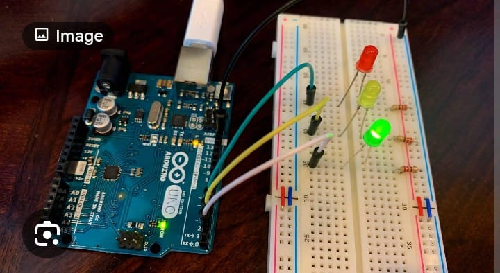

Project Overview
This project simulates a real-world traffic light system using red, yellow, and green LEDs controlled by timed delays in Arduino.
Components Used
- Arduino Uno
- Red, Yellow, Green LEDs
- 220Ω Resistors
- Breadboard
- Jumper Wires
How It Works
Each LED is connected to a digital pin. The Arduino controls the sequence using delay timing to mimic real traffic control logic.
⬅ Back to Home